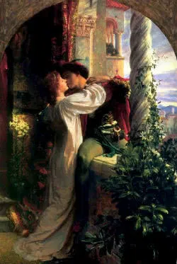

Romeu e Julieta são os protagonistas dessa história de amor. Eles se apaixonam perdidamente. No entanto, ambas famílias tem uma longa história de disputas. Romeu, que pretende casar com Rosalina, muda de ideia quando conhece a filha única dos Capuleto. Após o encontro, eles decidem se casar.
Eles se conhecem num baile de máscaras que ocorreu na cidade de Verona (Itália) e logo se apaixonam. Diante disso, o príncipe de Verona decide exilar Romeu da cidade. No entanto, ele aparece durante à noite para se encontrar com sua amada Julieta. Por fim, proibidos de viverem essa história de amor, eles escolhem a morte. Diante disso, as famílias que antes viviam em discórdias, passam por um momento de paz.
